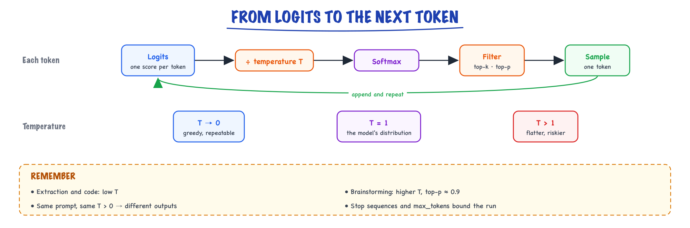

Decoding & sampling // LLM fundamentals
Greedy, temperature, top-k, top-p and the other knobs, with a live temperature lab.
01 — At a glance

Every generated token passes through the same pipeline. Temperature reshapes the distribution; top-k and top-p cut its tail; then one token is sampled and fed back.
02 — New words
| Word | Meaning |
|---|---|
| Logits | The raw score the model gives every token in its vocabulary at one step. Any real number; not yet probabilities. |
| Softmax | The function that turns logits into a probability distribution: exponentiate each score, divide by the sum. |
| Temperature \(T\) | A number the logits are divided by before softmax. Below 1 sharpens the distribution, above 1 flattens it. |
| Greedy decoding | Always pick the single most likely token. Deterministic in principle, often repetitive in practice. |
| Top-k | Keep only the \(k\) most likely tokens, renormalise, sample from those. |
| Top-p (nucleus) | Keep the smallest set of top tokens whose probabilities add up to at least \(p\), renormalise, sample. |
| Min-p | Keep every token whose probability is at least a fraction of the top token's probability. |
| Beam search | Keep the \(b\) best partial sequences at every step instead of one; returns the highest-scoring whole sequence. |
| Entropy | How spread out a distribution is, in bits. 0 means one certain outcome; higher means more uncertainty. |
| Frequency / presence penalty | Subtractions from the logits of tokens that already appeared, to discourage repetition. |
| Logprobs | The log-probabilities of the chosen (and alternative) tokens, returned by most APIs on request. |
| Constrained decoding | Masking out every token that would break a grammar or JSON schema, so the output is valid by construction. |
| Temperature | Randomness in decoding; 0 = deterministic, higher = creative. |
The full explanation
03 — The question
A language model does not produce text. At every step it produces one number per token in its vocabulary, about 100,000 numbers, and stops. Something outside the model has to turn those numbers into one chosen token, append it, and run the model again. That something is the decoding strategy, and it is entirely your choice: the same model, with the same weights, can be repetitive and safe or varied and creative depending only on how you pick from its scores.
This topic answers three questions an interviewer will ask in some form:
- What exactly do temperature, top-k and top-p do to the numbers?
- Why does greedy decoding, which picks the "best" token every time, often produce worse text?
- Which settings should a given product use, and why is "temperature 0" still not perfectly repeatable?
We will use one running example throughout: the prompt "The capital of France is", and seven candidate next tokens with these logits:
| Token | Paris | the | a | France | Lyon | beautiful | banana |
|---|---|---|---|---|---|---|---|
| Logit \(z_i\) | 4.0 | 2.6 | 2.2 | 1.6 | 1.0 | 0.6 | −1.0 |
A real vocabulary has tens of thousands of entries; seven is enough to see every mechanism and do every calculation by hand.
04 — Step 1: from logits to probabilities
Softmax turns any list of real numbers into a probability distribution:
\[ p_i = \frac{e^{z_i}}{\sum_j e^{z_j}} \]Exponentiating makes every value positive and exaggerates differences; dividing by the sum makes them add to 1. For our example:
| Token | \(z_i\) | \(e^{z_i}\) | \(p_i\) |
|---|---|---|---|
| Paris | 4.0 | 54.598 | 0.628 |
| the | 2.6 | 13.464 | 0.155 |
| a | 2.2 | 9.025 | 0.104 |
| France | 1.6 | 4.953 | 0.057 |
| Lyon | 1.0 | 2.718 | 0.031 |
| beautiful | 0.6 | 1.822 | 0.021 |
| banana | −1.0 | 0.368 | 0.004 |
| sum | 86.948 | 1.000 | |
Notice the gap: "Paris" is only 1.4 logits ahead of "the", yet it gets four times the probability, because \(e^{1.4} \approx 4.06\). Softmax only cares about differences between logits: adding the same constant to every \(z_i\) changes nothing. Real implementations subtract the maximum logit before exponentiating for exactly this reason, so that \(e^{z}\) never overflows.
The entropy of this distribution, \(H = -\sum_i p_i \log_2 p_i\), is 1.72 bits: roughly the uncertainty of choosing among \(2^{1.72} \approx 3.3\) equally likely options. Keep that number; temperature changes it.
05 — Step 2: temperature reshapes the distribution
Temperature divides every logit before softmax:
\[ p_i(T) = \frac{e^{z_i / T}}{\sum_j e^{z_j / T}} \]Dividing by \(T < 1\) stretches the gaps between logits, so the leader pulls further ahead. Dividing by \(T > 1\) shrinks the gaps, so the distribution flattens. The same seven tokens at three temperatures:
| Token | \(T = 0.5\) | \(T = 1\) | \(T = 2\) |
|---|---|---|---|
| Paris | 0.909 | 0.628 | 0.371 |
| the | 0.055 | 0.155 | 0.185 |
| a | 0.025 | 0.104 | 0.151 |
| France | 0.008 | 0.057 | 0.112 |
| Lyon | 0.002 | 0.031 | 0.083 |
| beautiful | 0.001 | 0.021 | 0.068 |
| banana | 0.000 | 0.004 | 0.031 |
| Entropy | 0.57 bits | 1.72 bits | 2.46 bits |
At \(T = 2\), "banana" has a 3% chance: across a 200-token answer, low-probability tokens like it will be sampled several times, and each one derails everything after it. That is why high temperature feels "creative" for a sentence and incoherent for a page.
Two limits are worth stating precisely:
- As \(T \to 0\), all probability goes to the largest logit: sampling becomes greedy decoding. APIs treat \(T = 0\) as "use argmax" rather than dividing by zero.
- As \(T \to \infty\), every \(z_i/T \to 0\), so every token gets probability \(1/V\): uniform noise.
What temperature does not do. It never changes the order of tokens and never adds knowledge. A model that ranks a wrong answer first will still rank it first at any temperature; lowering \(T\) only makes it say that wrong answer more consistently.
06 — Step 3: greedy decoding and why the best token is not the best text
Greedy decoding takes \(\arg\max_i p_i\) at every step. It is cheap and repeatable, and for short, factual completions ("The capital of France is" → "Paris") it is exactly right.
For long text it has a well-documented failure: repetition loops. Once the model has written a phrase, that phrase becomes more likely to follow itself (the model has learned that text repeats), so a greedy decoder can lock into "I think that I think that I think that…". Each individual choice was the most likely one; the sequence is still bad.
The underlying reason is that the most likely sequence is not what humans write. Human text is surprising at the token level: people rarely pick the single most predictable word. Measured against a language model, human-written text sits in a band of moderate probability, not at the top. Maximising likelihood at every step pulls generated text out of that band into bland, repetitive territory.
Beam search
Beam search keeps the \(b\) highest-scoring partial sequences at each step (scoring by summed log-probability), expands each by every token, and keeps the best \(b\) again. It finds sequences with higher total likelihood than greedy, which is exactly right when there is one correct output: translation, speech recognition, code that must match a spec. For open-ended generation it makes the blandness worse, because it is an even better likelihood maximiser. It also favours short outputs (every extra token adds a negative log-probability), which is why beam search implementations add a length penalty. Chat models essentially never use it.
07 — Step 4: top-k truncation
Sampling from the full distribution occasionally picks a token from the long tail of nonsense, like "banana". Truncation methods cut the tail off before sampling.
Top-k keeps the \(k\) most likely tokens and renormalises. With \(k = 3\) and \(T = 1\), the kept probabilities 0.628, 0.155 and 0.104 sum to 0.887, so after renormalising:
\[ p(\text{Paris}) = \frac{0.628}{0.887} = 0.708,\quad p(\text{the}) = 0.175,\quad p(\text{a}) = 0.117 \]The weakness is that \(k\) is fixed while the model's confidence is not. When the model is sure (one token holds 99%), \(k = 50\) still lets 49 junk tokens in. When it is genuinely unsure (a list of 200 plausible names), \(k = 50\) throws away good options. A fixed count cannot fit both.
08 — Step 5: top-p (nucleus) adapts to confidence
Top-p fixes this by cutting at a probability mass instead of a count. Sort tokens by probability, keep adding them until the running total reaches \(p\), and sample only from that set, the "nucleus".
Our running totals at \(T = 1\) are 0.628, 0.783, 0.887, 0.944, … With \(p = 0.9\), the first three tokens only reach 0.887, so "France" is needed to cross 0.9: the nucleus is four tokens. Renormalised:
\[ \text{Paris } 0.666,\ \ \text{the } 0.164,\ \ \text{a } 0.110,\ \ \text{France } 0.060 \]If the model had been 95% sure of "Paris", the nucleus would have been one token. If it were split across 200 names, the nucleus would hold most of them. That self-adjustment is why top-p, usually around 0.9 to 0.95, became the default truncation method.
Min-p
A newer alternative keeps every token whose probability is at least a fraction \(m\) of the top token's: keep \(i\) if \(p_i \ge m \cdot p_{\max}\). With \(m = 0.1\), the threshold is \(0.1 \times 0.628 = 0.063\): Paris, the and a stay, France (0.057) goes. Like top-p it adapts to confidence, and it holds up better at high temperatures, where top-p's nucleus balloons because the flattened distribution needs many tokens to reach \(p\).
09 — Step 6: putting the pipeline together
Real samplers chain these operations. The common order is: apply penalties to logits, divide by temperature, apply softmax, truncate (top-k, then top-p or min-p), renormalise, draw one token at random. Order matters: temperature applied before top-p changes which tokens make the nucleus.
Worked through with \(T = 0.7\) and \(p = 0.9\):
- Divide logits by 0.7 and softmax: Paris 0.790, the 0.107, a 0.060, France 0.026, …
- Running totals: 0.790, 0.896, 0.957. The nucleus needs three tokens to pass 0.9.
- Renormalise: Paris 0.825, the 0.112, a 0.063.
- Draw a random number \(u\) uniformly in [0, 1): \(u < 0.825\) → "Paris"; \(0.825 \le u < 0.937\) → "the"; otherwise "a".
Compare with \(T = 1, p = 0.9\), which kept four tokens: the lower temperature both concentrated mass on Paris and shrank the nucleus. The two knobs interact, which is why most guidance says to tune one of them, not both.
10 — Step 7: repetition controls
Even with good truncation, models repeat themselves. Two families of fixes act on the logits before sampling:
- Frequency and presence penalties (the OpenAI-style API parameters): for each token that has already appeared, subtract from its logit \[ z_i \leftarrow z_i - \alpha_{\text{freq}} \cdot c_i - \alpha_{\text{pres}} \cdot \mathbb{1}[c_i > 0] \] where \(c_i\) is how many times token \(i\) has appeared. The frequency term grows with every repeat; the presence term is a flat one-time charge for having appeared at all.
- Repetition penalty (common in open-model libraries): divide a previously seen token's positive logit by \(\theta > 1\) (or multiply a negative one), so it becomes less likely in proportion.
Both are blunt. A penalty does not know that repeating a variable name in code, a person's name in a biography, or a key in JSON is correct. Use small values, and leave them at zero for code and structured output.
11 — Step 8: forcing valid output with constrained decoding
Sampling can produce any token, including one that breaks the JSON your code expects. Constrained decoding removes that possibility: at every step, compute which tokens are allowed by a grammar (a JSON schema, a regular expression, an enum), set every other token's logit to \(-\infty\), then sample as usual. The output is valid by construction, not by hope. Provider "structured output" or "strict" modes and open-source libraries such as Outlines and llama.cpp grammars work this way.
Logit bias is the manual version: add a fixed amount to chosen tokens' logits. A large negative bias bans a token outright; a positive one nudges toward it (useful for forcing a classifier-style answer from a fixed set of labels).
12 — Step 9: why temperature 0 is still not perfectly repeatable
Set \(T = 0\) and run the same prompt twice: on hosted APIs, you will sometimes get different outputs. Decoding is deterministic; the logits are not, for three reasons:
- Floating-point arithmetic is not associative. \((a + b) + c\) can differ from \(a + (b + c)\) in the last bits. GPU kernels sum in different orders depending on how work is split.
- Batching changes the split. A serving engine batches your request with whoever else is in flight, which changes matrix shapes and therefore the kernels and summation orders used.
- Near-ties flip. If two tokens' logits differ by less than that numerical noise, the argmax can change, and every token after it changes too.
The seed parameter some APIs offer makes sampling repeatable "on a best-effort basis", which is the honest description. If you need exact repeatability (evaluation, caching, audit), store the outputs; do not rely on regenerating them.
13 — Choosing settings for a product
| Task | Settings | Why |
|---|---|---|
| Extraction, classification, JSON | \(T = 0\) (or ≤ 0.2), constrained decoding | One right answer; variety is error. |
| Code generation | \(T\) 0 to 0.3, no repetition penalty | Correctness matters; code legitimately repeats tokens. |
| RAG answers, support bots | \(T\) 0.2 to 0.5, top-p 0.9 | Grounded and consistent, but not robotic. |
| Chat, writing, brainstorming | \(T\) 0.7 to 1.0, top-p 0.9 to 0.95 or min-p 0.05 to 0.1 | Variety is the point; truncation keeps it coherent. |
| Generating many candidates to rank (self-consistency, best-of-n) | \(T\) 0.7 to 1.0 | Diversity across samples is what makes voting or ranking work. |
Always set max_tokens, and check the finish reason: length means the answer was cut off, not that it was complete.
14 — In code: a sampler you can verify by hand
import numpy as np def sample(logits, temperature=1.0, top_k=None, top_p=None, min_p=None, rng=np.random.default_rng(0)): z = np.asarray(logits, dtype=np.float64) if temperature == 0: # greedy: no division by zero return int(np.argmax(z)) z = z / temperature p = np.exp(z - z.max()) # subtract max: never overflows p /= p.sum() order = np.argsort(-p) # most likely first keep = np.ones_like(p, dtype=bool) if top_k is not None: keep[order[top_k:]] = False if top_p is not None: cum = np.cumsum(p[order]) cutoff = np.searchsorted(cum, top_p) + 1 # smallest prefix reaching top_p keep[order[cutoff:]] = False if min_p is not None: keep &= p >= min_p * p.max() p = np.where(keep, p, 0.0) p /= p.sum() # renormalise what survived return int(rng.choice(len(p), p=p)) logits = [4.0, 2.6, 2.2, 1.6, 1.0, 0.6, -1.0] print(sample(logits, temperature=0)) # 0 -> "Paris" print(sample(logits, temperature=0.7, top_p=0.9)) # nucleus of 3 tokens
Print p just before the final draw for the \(T = 0.7, p = 0.9\) case and you should see 0.825, 0.112 and 0.063 on the first three tokens and zeros elsewhere: the numbers from Step 6.
15 — The knobs you can turn
You can't easily change the model's brain, but you control how it picks each next token. These are the settings you'll actually use.
16 — The four knobs
Recall from What an LLM is: at every step the model hands you a probability distribution over its whole vocabulary. Decoding parameters decide how a single token gets drawn from it. There are only four you'll touch routinely:
| Knob | What it does | Use when |
|---|---|---|
| temperature (0–~1) | Randomness. 0 = always pick the most likely token (deterministic, repeatable). Higher = more varied/creative. Mechanically: logits are divided by T before softmax, so low T sharpens the distribution, high T flattens it. | 0 for extraction, code, classification, caching · 0.7+ for brainstorming, writing. |
| top_p (0–1) | "Nucleus sampling" — only consider the smallest set of tokens whose probability sums to p, renormalize, sample from that. top_p=0.9 = "sample only from the credible candidates." | An alternative to temperature; usually tune one, not both. |
| max_tokens | Hard cap on output length. Not a target — the model doesn't know it exists; generation just gets cut off there. | Always set it — controls cost & runaway generation. Size it ~2× your expected longest valid answer. |
| stop sequences | Strings that force generation to halt the moment they're emitted (the stop string itself is not returned). | Structured formats; ending at a delimiter; single-item generation from list-happy models. |
17 — See it, don't trust it: sweeping temperature and top_p
The fastest way to build intuition is to sweep the knobs on one prompt and read the outputs side by side:
import anthropic client = anthropic.Anthropic() PROMPT = "Suggest a name for a coffee shop run by robots. Reply with the name only." def sample(temperature=None, top_p=None, n=4): kwargs = dict(model="claude-sonnet-4-5", max_tokens=20, messages=[{"role": "user", "content": PROMPT}]) if temperature is not None: kwargs["temperature"] = temperature if top_p is not None: kwargs["top_p"] = top_p # set one OR the other outs = [client.messages.create(**kwargs).content[0].text.strip() for _ in range(n)] label = f"T={temperature}" if temperature is not None else f"top_p={top_p}" print(f"{label:>10}: {outs}") sample(temperature=0) sample(temperature=0.4) sample(temperature=1.0) sample(top_p=0.5) sample(top_p=0.95)
Typical output (illustrative — your run will differ, which is rather the point):
T=0: ['Brew Bot', 'Brew Bot', 'Brew Bot', 'Brew Bot'] ← same every time
T=0.4: ['Brew Bot', 'Roast Protocol', 'Brew Bot', 'Gear & Grind'] ← mild variety
T=1.0: ['Perk-a-Tron', 'The Soldered Bean', 'Circuit Grounds',
'Steam.exe'] ← every call different
top_p=0.5: ['Brew Bot', 'Brew Bot', 'Roast Lab', 'Brew Bot'] ← tail chopped off
top_p=0.95: ['Caffeine Circuit', 'Mecha Mocha', 'Brew Bot', 'Volt & Bean']
Reading the sweep: temperature reshapes the whole distribution smoothly (even weird tokens keep a sliver of probability at T=1), while top_p makes a hard cut — the tail is simply gone, then the survivors are sampled normally. That's why very high temperature occasionally produces something incoherent (a genuinely rare token got lucky), while top_p keeps outputs on-distribution even when varied. In practice: leave top_p at its default and drive temperature, unless you specifically want "varied but never unhinged," which is temperature≈1, top_p≈0.9.
18 — Stop sequences: ending exactly where you want
Stop sequences shine when you want one item from a model that loves to elaborate, or when you're generating into a structured format and want to halt at a delimiter instead of paying for (and then trimming) trailing prose:
# Use case 1: force exactly one list item. Without the stop, you'd get 10 bullets. resp = client.messages.create( model="claude-sonnet-4-5", max_tokens=100, temperature=0, stop_sequences=["\n"], # halt at the first newline messages=[{"role": "user", "content": "List startup name ideas for a plant-care app, one per line."}], ) print(repr(resp.content[0].text)) # → 'Sproutly' (no newline, no second item) print(resp.stop_reason) # → 'stop_sequence' print(resp.stop_sequence) # → '\n' (which one fired) # Use case 2: generate until the end of one XML-ish block, not beyond. resp = client.messages.create( model="claude-sonnet-4-5", max_tokens=500, temperature=0, stop_sequences=["</summary>"], messages=[{"role": "user", "content": "Summarize the following in a <summary> tag:\n" + document}], ) summary = resp.content[0].text.split("<summary>")[-1].strip() # stop string not included # Use case 3: guard rails for a Q&A bot that must answer one question at a time — # stop before it starts inventing the user's next question: resp = client.messages.create( model="claude-sonnet-4-5", max_tokens=400, stop_sequences=["\nUser:", "\nQ:"], messages=[{"role": "user", "content": "Q: What is DNS?\nA:"}], )
Two details worth knowing: the matched stop string is not included in the returned text (budget your parser accordingly), and stop_reason/stop_sequence tell you whether you halted on a stop, ran to completion, or hit max_tokens — three very different situations for downstream code.
19 — Which settings for which job
| Task | temperature | top_p | max_tokens | stop sequences | Why |
|---|---|---|---|---|---|
| Data extraction → JSON | 0 | default | tight (schema size × ~1.5) | — | You want the same JSON for the same input; variety is a bug. |
| Classification / routing | 0 | default | very tight (5–20) | \n | One label, no essay. Tight cap + stop also slashes cost. |
| Code generation | 0–0.3 | default | generous | — | Correctness over creativity; slight T can help escape repetition. |
| Response caching valid? | 0 | default | any | — | Caching keyed on prompt only makes sense if output is stable. |
| Chat / support assistant | 0.3–0.7 | default | moderate (300–800) | — | Some warmth and phrasing variety, still on-message. |
| Brainstorming, naming, marketing copy | 0.9–1.0 | 0.9–0.95 | moderate | — | Diversity is the product; top_p keeps it coherent. |
| Generating N alternatives (best-of-N + judge) | 0.8–1.0 | 0.9 | per-candidate | — | You need the samples to differ or N-of-1 in disguise. |
| Evals / regression tests | 0 | default | fixed | fixed | Minimize variance so diffs mean something. |
Mini-scenario: the flaky eval suite
Your team ships a prompt change and the eval pass-rate moves from 84% to 79%. Panic, revert, re-run: 83%. Re-run again: 86%. Two hours of archaeology later, the cause: someone left temperature unset in the eval harness (provider default is typically ~1.0), so every run sampled different outputs — the "regression" was sampling noise. The fix is one line (temperature=0 in the harness) plus one habit: any number you intend to compare across runs must come from pinned decoding settings. Keep a second eval lane at production temperature if you want to measure real-world variance — but label it as such.
The one to remember
temperature. Set it to0 when you want the same answer every time (and to make response-caching valid). Turn it up only when you want variety. If you remember one config habit from this topic: extraction/classification/evals at 0, creative work at 0.7+, and never tune temperature and top_p at the same time — you won't be able to tell which knob did what.Knob gotchas
- Unset ≠ zero. Most providers default temperature to ~1.0. If you never set it, your "deterministic" pipeline has been sampling all along.
max_tokensis a guillotine, not a request. The model doesn't plan around it; it just stops mid-token-stream. Truncated JSON that almost parses is the classic symptom — always checkstop_reason == "max_tokens"before parsing.- Stop sequences match anywhere, including inside content you wanted.
stop_sequences=["\n"]on a task whose valid answer contains newlines silently truncates it. - Reasoning/extended-thinking modes often ignore or restrict these knobs (temperature may be forced to 1, or the parameter rejected). Check the model's docs before assuming your settings apply.
- Temperature 0 doesn't fix wrongness. It makes the model consistently pick its favorite token — if the favorite is a hallucination, you now get the same hallucination every time. Determinism ≠ correctness.
Determinism caveat
Even attemperature=0, outputs aren't guaranteed identical (floating-point non-associativity under different batch shapes, hardware differences, silent model updates). Treat "deterministic" as "very stable," not "cryptographically fixed" — and design tests to tolerate benign variation (compare parsed fields, not raw strings).Takeaways
- Decoding knobs control how a token is drawn from the model's distribution — temperature reshapes it, top_p truncates its tail.
- Tune temperature or top_p, not both; 0 for repeatability, 0.7+ for variety.
max_tokensis a cost/runaway guard that cuts mid-sentence — always checkstop_reason.- Stop sequences end generation exactly at your delimiter and save you the tokens you didn't want.
Exercises
- Run
sweep.pywith n=10 at T ∈ {0, 0.3, 0.7, 1.0}. Count distinct outputs at each setting and sketch the curve. At what T does your prompt stop being "stable enough" for caching? - Build a classifier call (sentiment: positive/negative/neutral) with
temperature=0, max_tokens=5, stop_sequences=["\n"]. Measure cost per 1,000 calls vs. the same prompt with no caps (assume illustrative prices). How much did the knobs alone save? - Deliberately break JSON with
max_tokens: ask for a 10-field JSON object withmax_tokens=40. Write the guard that detectsstop_reason=="max_tokens"and retries with a doubled cap. - Reproduce the flaky-eval story: run a 20-question eval twice at default temperature and twice at 0. Report the pass-rate spread in each mode.
- Find a prompt where
temperature=1, top_p=0.9gives clearly better results thantemperature=1alone (hint: long creative generation, watch for the occasional derailment without top_p).
20 — Decoding: greedy, temperature, top-k, top-p
- Greedy: always the argmax. Deterministic, prone to repetition loops.
- Temperature T: sample from softmax(logits / T). T < 1 sharpens, T > 1 flattens, T → 0 is greedy.
- Top-k: sample only among the k most likely tokens.
- Top-p (nucleus): the smallest set whose probabilities sum to p; adapts to how confident the model is.
- Beam search: keep the best b partial sequences; good for translation, bland for open-ended chat.
- Repetition / frequency penalties, and constrained decoding (grammar or JSON-schema masks on logits) for structured output.
Lab: temperature reshapes the next-token distribution
In production
21 — Where people get lost
- "Temperature 0 is deterministic." The decoding is; the logits are not. See Step 9.
- "Higher temperature makes the model more creative, so smarter." It makes it more random. It never adds a possibility the model did not already rank.
- Tuning temperature and top-p together. They interact (Step 6). Change one, hold the other at a standard value.
- Using a repetition penalty on code or JSON. It punishes tokens that must repeat, such as brackets, keys and variable names.
- Treating beam search as "better sampling" for chat. It maximises likelihood harder than greedy and makes open-ended text blander.
- Ignoring the finish reason. A response that hit
max_tokensis truncated, and truncated JSON is invalid JSON. - Reading logprobs as calibrated confidence. After instruction tuning and RLHF, token probabilities are often overconfident; use them to rank, not as true accuracy estimates, unless you have calibrated them.
22 — How this connects
Builds on
- What an LLM is — A next-token predictor, the language-modeling objective, model families and scaling laws.